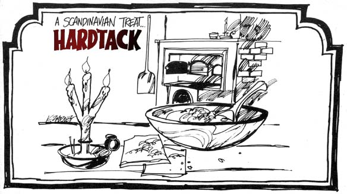
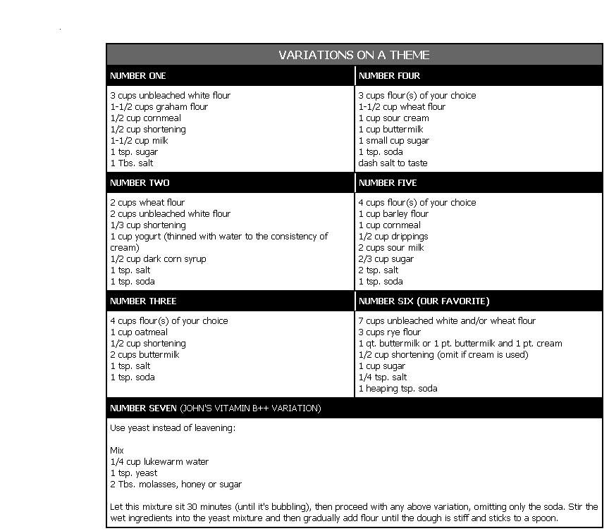

DOKUS CUDDY
The national heritage of many nations includes some delicious form of flatbread: the Mexican tortilla, Italian pizza chapati from India . . . and, here in northern Minnesota, the descendants of Scandinavian settlers still bake hardtack. While visiting a local farmhouse, John (my husband) and I happened to sample some of that last delicacy. We liked it so much that, as we left, our hostess made us a gift of a whole bagful to take along. Although our farm was only four miles away, the sack was empty by the time we arrived home! Everyone I know who's tried this nutritious fare acclaims it as THE super munchie.
Hardtack can be made with any combination of flours you choose: corn, wheat, oats, barley, rice, rye or unbleached white . . . but if you use a generous ratio of whole grain flours the taste is sure to be delicious. Buttermilk, yogurt, whey, cream and sweet or sour milk may be used interchangeably as the necessary liquid, or you can try mixing them.
The real art of making good, crunchy hardtack lies in rolling the dough very thin. The traditional method is to compound a stiff mixture, put some flour on a board and then take a small lump of the blend and spread it out as much as possible. Then comes the difficult part . . . transferring the flimsy film to a cookie sheet. John experimented with several batches and found that this last step was just too hard to handle . . . so he eliminated it altogether by simply rolling the dough out on the flat pan in the first place.
Here, then, is the "new, improved" Cuddy method of making hardtack: First, lightly grease and flour your baking surface. Then take an egg-sized piece of dough (enough to cover a 14" X 16" sheet when it is spread out), dust the lump with flour to prevent sticking (repeat as necessary), center the ball on the cookie sheet and squash it slightly with your palm.
Now start flattening the mixture and think sheer! A flour sock slipped over a rolling pin is the perfect tool to use at this point, but-in a pinch-you can substitute a cylindrical jai. With some practice, your proficiency and speed at this baker's task will improve tremendously. Trim off any excess dough and throw the scraps back in your mixing bowl.
Bake the flatbread in a hot oven (around 400°). If you have a wood stove, be careful until you get to know its nature. The "loaf's" edges nearest the firebox may tend to scorch if the hardtack is left too long. When the border browns, flip the bread over and bake till it's almost cardboard stiff. Turn your unleavened creation again and wait this time until the thin slab is cardboard stiff. Then remove the whole thing from the oven and carefully lift the results of your labor off the sheet. Get ready to stand back if there's anyone around with an appetite! This treat can't be surpassed when it's hot and fresh.
A recipe using about five cups of flour will yield at least five batches. To store the hardtack, break it into pieces and place them in a cannister, a tin container, a jar with a cover or anything else that's airtight. This is one baked goody that won't ever spoil as long as it remains dry.
Flatbread is an ideal provision for hiking or backpacking because it is lightweight, compact and keeps well. You can carry many days' supply with ease, and the crunchy morsels are satisfying and sustaining. We use this food around the homestead as both a staple and a snack. Eaten with butter, cinnamon and sugar, cheese, sausage, nut butters, preserves, etc., hardtack becomes the vehicle for whatever taste trip you crave. And it's just as good all by itself. I think we've discovered the closest thing to Tolkien's Elfin Waybread!
|
 |
 |
|